2 Die Arbeit leichter gestalten
Arbeit vorausschauend planen
- Planen Sie vor Arbeitsbeginn, welche Materialien und Werkzeuge benötigt werden, wie sie zu transportieren und zu lagern sind.
- Planen Sie für den Tag Ihr Arbeitspensum realistisch ein und gönnen Sie sich kurze Minipausen zur Regeneration Ihrer Kräfte. Machen Sie diese Minipausen und gehen Sie nicht über Ihr Unbehagen hinweg. Sehen Sie Arbeit als einen Prozess an, zu dem Pausen gehören. Das Schieben der Pausen an das Arbeitsende ist für Ihre Gesundheit eine Katastrophe.
- Störungen des Arbeitsablaufs auf dem Bau sind normal. Dafür sollte ein Zeitpuffer zur Verfügung stehen, um krank machenden, unnötigen Stress zu vermeiden.
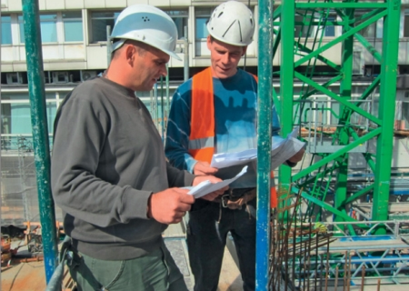
Arbeit vorausschauend planen
Arbeitsplatz einrichten
- Häufig gebrauchte Arbeitsmittel und Material gut erreichbar platzieren und möglichst höher lagern, um unnötiges Bücken zu vermeiden.
- Für genügend Bewegungsfläche am Arbeitsplatz sorgen. Nur so vermeiden Sie ungünstige Körperhaltungen.
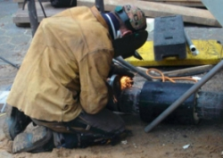
Arbeitshöhe: ungünstig,
da Zwangshaltung
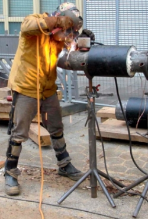
Arbeitshöhe: gute Lösung,
Hochlagerung ermöglicht aufrechtes Arbeiten
Transporthilfsmittel einsetzen
- Bereitgestellte Hilfsmittel, z. B. Schubkarren, Treppensteigerkarren, aber auch auf der Baustelle befindliche Krane oder Bauaufzüge zur Beförderung von Lasten benutzen.
- An neue Geräte muss man sich mitunter erst gewöhnen. Auch wenn Sie meinen, Handarbeit geht schneller. Mit der Gewöhnung wird der empfundene Zeitverlust schnell ausgeglichen.
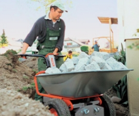
Minidumper mit Elektroantrieb
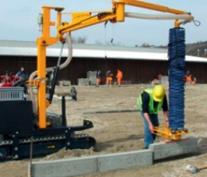
Bordsteinversetzgerät
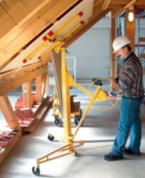
Platten-Montagehilfe
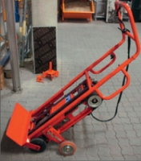
Treppensteiger
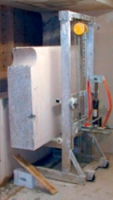
Steinblock-Lift
Ergonomische Werkzeuge verwenden
- Mit ergonomischen Handwerkzeugen, die auf die zu verrichtende Arbeit abgestimmt sind, kann man oft viel schneller und kräfteschonender arbeiten.
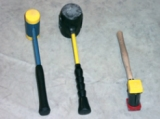
Hämmer – rückschlagfrei
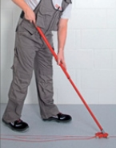
Abstoßmesser mit
Teleskopstiel
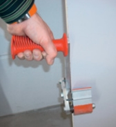
Tragegriff – rutschfest
Funktionelle Berufskleidung bzw. PSA benutzen
Arbeitskleidung sollte Sie nicht einengen, im Winter warm halten und im Sommer vor intensiver Sonne einschließlich UV-Strahlung schützen. Wählen Sie Materialien aus, die sich im Sommer auf der Haut kühl anfühlen und Sie im Winter wärmen.
- Ein freier unbekleideter Rücken kann schnell zu Verspannungen der Muskulatur führen, deshalb immer den ganzen Rücken bedeckende Kleidung tragen.
- Für Arbeiten im Knien sollten Arbeitshosen mit eingearbeitetem Knieschutz getragen werden.
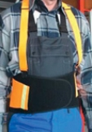
Rückenstützgurt
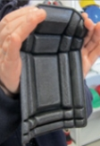
Knieschutzpad
(anpassbar)
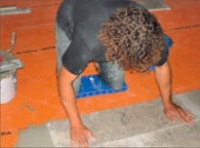
Knieschutzmatte
Heben und Tragen von Lasten
- Heben und tragen Sie alle Lasten körpernah, also vor dem Körper oder auf der Schulter und arbeiten Sie dicht am Werkstück. Vermeiden Sie Verdrehungen des Rückens.
- Beim Heben und Tragen von Lasten vorher das Gewicht abschätzen. Lasten ab ca. 15 kg gelten als schwer und sollten in der Regel nicht mehr mit einer Hand gehoben werden.
- Heben Sie schwere Lasten aus der Hocke an, so als würden Sie sich auf einen Stuhl setzen.
- Versuchen Sie den Rücken so gerade wie möglich zu halten.
Lasten richtig tragen:
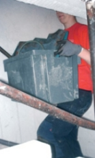
nah am Körper
Lasten richtig einschätzen:
Unterscheiden zwischen "leicht" und "schwer"
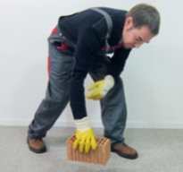
Leichte Last: mit Abstützen,
Kraft wird abgeleitet
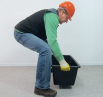
Schwere Last: beidhändig, nah herantreten, aus der Hocke heben, körpernah, Rücken gerade halten
Verdrehungen des Rückens vermeiden
- Arbeiten Sie so, dass Sie die Arbeit direkt vor sich haben und mit geradem Rücken arbeiten können.
- Vermeiden Sie Verdrehungen des Rückens beim Anheben und Weiterreichen von Lasten.
- Wenn die Arbeit Verdrehungen erfordert, entlasten Sie sich ab und zu, indem Sie sich aufrichten, recken und strecken.
Zwangshaltungen und Verdrehungen des Rückens z. B. bei:
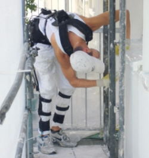
Malerarbeiten
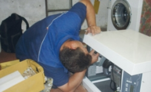
Installationsarbeiten
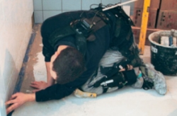
Fliesenlegerarbeiten
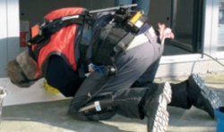
Dachdeckerarbeiten
Abbildungen zeigen Beschäftigte mit dem CUELA-Messsystem zur Ermittlung körperlicher Belastungen.
Weitere Informationen:
www.ergonomie-bau.de